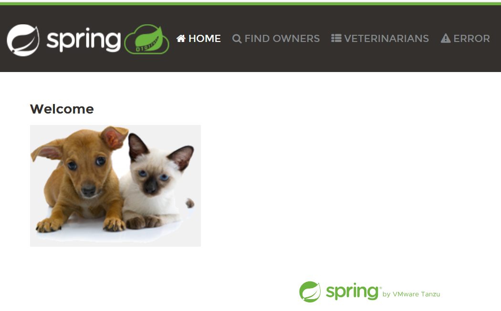
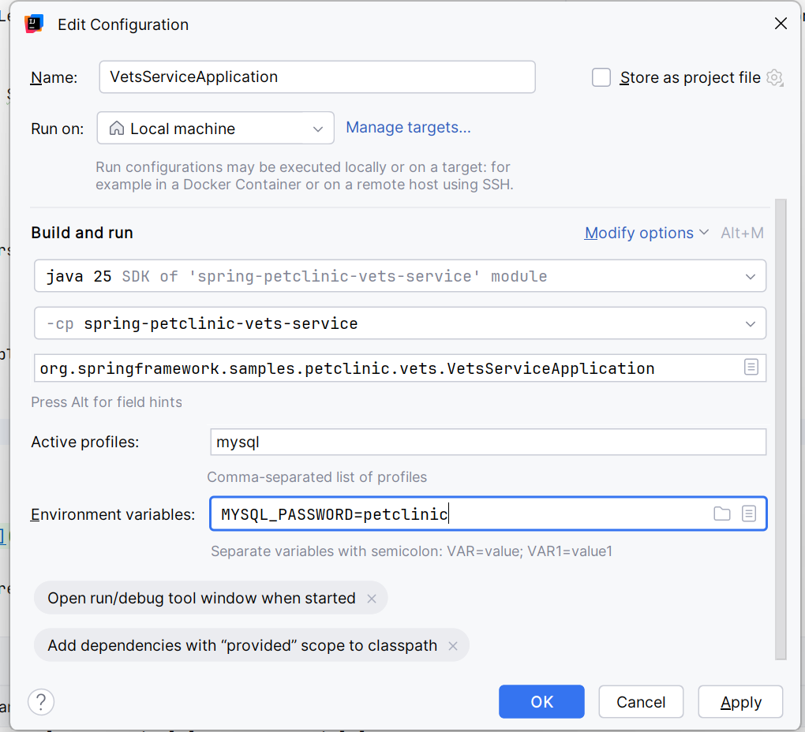
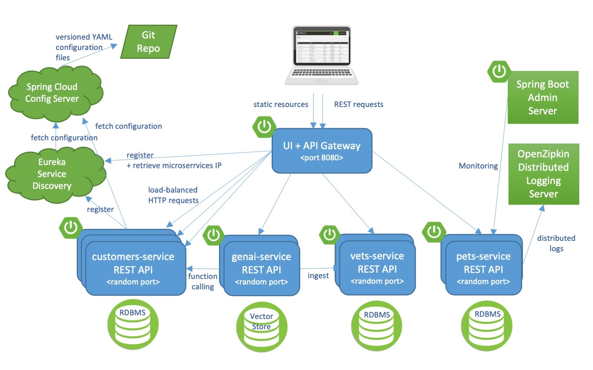

Projet Petclinic
1 Introduction
L’application Spring Pet Clinic est une application de démo emblématique de Spring. Elle existe depuis les débuts de Spring et a fait l’objet de nombreuses déclinaisons. (voir Forks)
Pour ce projet, nous allons utiliser une version modifiée de spring-petclinic-microservices qui utilise Vue.js.
Elle permet de gérer une clinique vétérinaire avec ses clients, ses animaux et ses vétérinaires. Les utilisateurs principaux seraient les assistant(e)s vétérinaires.

2 Déroulement du projet
- 3 parties, une par séance
- Groupes de 3 personnes
- Projet itératif. Le code produit dans une séance servira de base à la prochaine séance.
Sessions :
- séance 1 (3h30) : découverte, chargement de données, requêtes simples, calculs statistiques.
- séance 2 (3h30) : partie 2 - ajout de nouvelles fonctionnalités
- séance 3 (1h45) : partie 3 - ajout de nouvelles fonctionnalités
2.1 Déroulement d’une séance
- Lecture du cahier des charges, questions à l’enseignant
- Répartition des tâches (vous pouvez travailler en pair programming)
- Développement, tests, rédaction de la documentation
- Au cours de la séance, votre enseignant invitera votre groupe à un échange de 10-15 mn :
- Il vous posera des questions de compréhension de votre code
- Il répondra à vos questions et pourra vous donner des conseils
- Vous devrez soumettre votre travail (commit & push) avant la fin de la séance.
- pas de travail en dehors des heures de classe, pas de rush pour finir à la dernière minute.
- respect du principe eXtreme Programming Sustainable Pace
- vous devez utiliser le temps disponible efficacement.
- le travail effectué en dehors des heures de cours ne sera pas noté
- les commits contenant beaucoup de modifications seront considérés comme suspects : fait avec IA ?
- committez souvent
- pas de travail en dehors des heures de classe, pas de rush pour finir à la dernière minute.
3 Critères d’évaluation
- 30 % - Fonctionnalités implémentées
- est-ce que toutes les fonctionnalités demandées sont implémentées ?
- est-ce que des fonctionnalités supplémentaires sont implémentées ?
- 20 % - Suivi
- réponses aux questions
- avancement régulier
- 25 % - Qualité du code et organisation
- bugs présents ?
- petites méthodes,
- lisibilité, modularité,
- organisation des packages
- qualité de la documentation (javadoc et README)
- 15 % - Tests unitaires Java
- Structure, lisibilité et pertinence des tests,
- couverture avec l’outil de code coverage (cible 80%).
- 10 % - Interface utilisateur et expérience
- Facilité d’utilisation, interface intuitive
Il est préférable de terminer peu de fonctionnalités, mais avoir un code propre avec des tests associés.
4 Installation
- Cliquez sur ce lien d’invitation GitHub Classroom
- Créez ou rejoignez votre équipe
- Clonez le projet
- Compilez et démarrez les services
4.1 Démarrage des services
4.1.1 Services d’infrastructure
Vous devez d’abord démarrer ces 2 services :
ConfigServerApplication- port 8888 dansspring-petclinic-config-server- expose les fichiers de configuration situés dans le répertoire
config-repo. - Par exemple, l’url http://localhost:8888/vets-service-mysql.yml renvoie la config du
vets-servicepour le profilemysql. Le config-server combine les fichiersconfig-repo/application.ymletconfig-repo/vets-service.yml. - Il est également possible d’externaliser les fichiers de config dans un autre repository Git (voir
spring-petclinic-config-server/src/main/resources/application.yml).
- expose les fichiers de configuration situés dans le répertoire
DiscoveryServerApplication- port 8761 dansspring-petclinic-discovery-server- serveur Eureka, qui est une “registry” des services
- les services s’enregistrent auprès d’Eureka lorsqu’ils démarrent
- les services peuvent utiliser n’importe quel host/port
- plusieurs instances du même service peuvent s’enregistrer pour permettre le load balancing
Pour démarrer, utiliser la vue “Services” dans IntelliJ, ou avec maven :
cd spring-petclinic-config-server
../mvnw spring-boot:runcd spring-petclinic-discovery-server
../mvnw spring-boot:runVérifiez que ces deux services d’infrastructure démarrent correctement.
4.1.2 Services applicatifs
Démarrez les services applicatifs :
CustomersServiceApplicationdansspring-petclinic-customers-serviceVetsServiceApplicationdansspring-petclinic-vets-serviceVisitsServiceApplicationdansspring-petclinic-visits-service
Nous pouvons maintenant démarrer la gateway qui va servir les ressources web et appeler les services applicatifs :
- Construisez les artefacts vue.js qui seront copiés dans
spring-petclinic-api-gateway/target/classes/static
cd spring-petclinic-api-gateway/src/main/frontend
npm install
npm run buildAlternativement, vous pouvez utiliser mvn install -PbuildVue qui produira à la fois le code java compilé et les artefacts javascript.
- Démarrez
ApiGatewayApplicationdansspring-petclinic-api-gateway
L’application est disponible sur http://localhost:8080.
4.1.3 Autres services
Il existe d’autres services dans la base de code, que nous n’utiliserons pas :
SpringBootAdminApplicationpermet de monitorer les services,GenAIServiceApplicationpermet d’appeler une IA générative pour le chat bot.
4.2 UI en mode développement
Si vous souhaitez modifier le code Vue.Js, il est assez fastidieux de devoir re-construire les artefacts après chaque modification. Pour lancer l’interface en mode développement, entrez les commandes suivantes :
cd spring-petclinic-api-gateway/src/main/frontend
npm run devUn serveur Vite est lancé et écoute sur http://localhost:3000. Il redirige les requêtes HTTP vers le port 8080 (voir vite.config.js).
Remarque : Firefox peut avoir des difficultés avec le mode développement de Vite. Utilisez un autre navigateur s’il patine.
4.3 Base de données
Par défaut, l’application utilise un SGBD HSQLDB in-memory. Les tables sont créées au démarrage des services avec les scripts schema.sql, et sont peuplées avec les scripts data.sql. Toutes les données sont perdues après arrêt du service.
Si vous souhaitez conserver les données, il faut utiliser un SGBD MySQL :
- installez MySql
- créez une bdd :
CREATE DATABASE petclinic; - Dans IntelliJ, ouvrez la vue “Services”
Pour chaque service utilisant une BDD (visits, vets, customers):
- clic-droit sur le service -> Edit run configuration
- Active profiles -> ajoutez
mysql - Environment variables -> ajoutez
MYSQL_PASSWORD=***(remplacez***par votre mot de passe admin MySql) - démarrez les services avec le profile “mysql”

4.4 Tests
Pour chaque service, lancez les tests depuis IntelliJ, ou avec maven :
cd spring-petclinic-vets-service
mvn testLe rapport de test coverage Jacoco est généré dans target/site/jacoco/index.html.
Lorsque vous “commit & push” votre code vers GitHub, GitHub Actions lance tous les tests et génère les rapports de coverage (voir onglet Action dans GitHub).
5 Architecture

5.1 Exploration
- Naviguez dans l’interface pour vous familiariser avec l’existant.
- Pour voir des visites : Jean Coleman
- Utiliser le mode debug (F12) du navigateur pour voir les requêtes REST envoyées aux services
- Naviguez dans les classes du projet pour comprendre comment les endpoints sont appelés.
- Ouvrez les fichiers
.sqlet les classes@Entityassociées pour comprendre les différents schémas
5.2 Parcours d’une requête
Examinons comment une vue appelle un endpoint :
OwnersList.vueappelleapi.getOwners- dans
api.js, on abaseUrl: '/api'.getOwnersappelle donc/api/customer/owners - dans
spring-petclinic-api-gateway/src/main/resources/application.yml:- les
routesdéterminent quel service est appelé. - Pour
/api/customer/**, la gateway envoie la requête àcustomers-serviceavecStripPrefix=2- donc la gateway envoie une requête à
customers-servicesur l’url/owners(les deux préfixes/apiet/customersont enlevés)
- donc la gateway envoie une requête à
- les
- dans
spring-petclinic-customers-service/.../web/OwnerResource, on a@RequestMapping("/owners")- la méthode
OwnerResource.findAll()sera appelée.
- la méthode
6 Communication entre services
Les services peuvent s’appeler entre eux via leurs noms Eureka :
- Exemple :
visits-serviceveut appelervets-service - URL :
http://vets-service/vets/{id}(Eureka résout le hostname) - Utiliser
RestTemplateouWebClient(voir examples dans le code)
7 Travail à réaliser
Vous êtes l’équipe de développement chargée d’améliorer le produit. Le “Product Owner” vous donne une liste de bugs/fonctionnalités à implémenter.
À vous de vous organiser au mieux pour implémenter les plus importantes dans le temps imparti.
Pensez à documenter vos choix de fonctionnalités, de conception ainsi que la répartition des tâches dans README.md.
7.1 Partie 1
7.1.1 Edit Pet : Corriger le bug
Lorsqu’on souhaite modifier un Pet, le type de pet (bird, cat, dog, …) n’apparaît pas.
7.1.2 Implémenter Create / Read / Update pour les vétérinaires
La liste de vétérinaires est fixe. Implémenter les endpoints et les interfaces nécessaires pour pouvoir :
- créer un nouveau vétérinaire
- modifier un vétérinaire
- consulter les détails d’un vétérinaire
7.1.3 Associer un vétérinaire à une visite
- Dans la page “Add Visit”, ajouter un champ pour spécifier le vétérinaire qui prendra en charge l’animal.
- le champ est facultatif
- Sur la page listant les visites, le vétérinaire doit apparaître
7.1.4 BONUS : Montrer les RDV du vétérinaire
- Dans la page de détails du vétérinaire, montrer les visites.
- Les visites affichées peuvent être filtrées par date et/ou type d’animal
7.1.5 BONUS: Suppression de visite
En cas d’erreur, il faudrait pouvoir supprimer une visite. Cependant, le comptable souhaite conserver les données de visites passées.
- Ajouter un bouton pour pouvoir supprimer une visite.
- Seules les visites dans le futur peuvent être supprimées
7.2 Partie 2
7.2.1 Suppression soft d’animaux
Lorsqu’un client perd un animal, il est mal venu de lui rappeler qu’il doit faire ses vaccins. Il faudrait donc pouvoir supprimer un animal de la vue OwnerDetails. Cependant, le comptable (toujours lui !) souhaite conserver les données de visites passées.
- Ajouter un bouton pour pouvoir supprimer un animal
- le bouton renseigne un champ “date de suppression”, mais ne le supprime pas de la base
- interdire la suppression s’il y a des rendez-vous futurs planifiés
- Dans l’écran
OwnerDetails, ajouter un bouton pour afficher/masquer les animaux supprimés.
7.2.2 Recherche de clients améliorée
La recherche de client est assez simpliste : recherche sur tous les champs, et effectuée côté client. Il faudrait pouvoir gérer plusieurs centaines de clients sur cet écran, et effectuer des recherches côté serveur.
- ajouter une pagination sur “find owners”
- seuls 20 clients sont affichés
- des boutons prev / next permettent de naviguer entre les pages
- utiliser
Pageable, voir Pagination and Sorting using Spring Data JPA
- ajouter des critères de recherche. La recherche doit être effectuée sur le serveur.
- recherche par name, city, pet name
- les critères peuvent être combinés avec AND
- Si je cherche name=Smith pet=Max, on verra tous les clients dont le nom commence par Smith ayant un animal nommé Max.
- ajouter un critère de tri : sort by name, city, pet name. Descending or Ascending
- le tri doit être effectué après la pagination : si je trie par name ascending, un clic sur “next” doit montrer les clients suivants dans le même ordre de tri.
- les boutons doivent être sur les en-têtes de colonnes.
7.2.3 BONUS : locking optimiste
- Ajouter un champ multiligne “comments” dans l’écran Pet.
Ce champ permet de noter des informations médicales sur un animal. Parfois, les secrétaires et les vétérinaires modifient en même temps ce champ.
Sur cet écran “Edit Pet”, utiliser l’optimistic locking pour détecter qu’un utilisateur est en train d’écraser les données d’un autre utilisateur. Scénario :
- Alice ouvre l’écran edit pet de Max, et commence à taper ses commentaires
- Bob ouvre le même écran, et tape ses commentaires
- Alice sauvegarde => OK
- Bob sauvegarde => un message doit prévenir l’utilisateur. Il doit copier ses changements et recharger la page avant d’essayer à nouveau la sauvegarde.
7.2.4 BONUS : Suppression soft pour les vétérinaires
Lorsqu’un vétérinaire quitte la clinique, il faudrait pouvoir le supprimer. Mais on souhaite conserver ses données.
- Ajouter un bouton pour pouvoir supprimer un vétérinaire
- le bouton renseigne un champ “date de suppression”, mais ne le supprime pas de la base
- interdire la suppression s’il y a des rendez-vous futurs planifiés
- Dans l’écran des vétérinaires, masquer les vétérinaires supprimés
- Dans l’écran d’ajout de visite, filtrer les vétérinaires supprimés
- Dans la liste des visites, le vétérinaire supprimé doit toujours apparaître
8 Conseils et bonnes pratiques
- Pensez à appliquer les bonnes pratiques vues durant ce cours. SOLID, YAGNI, Boy Scout, TDD, …
- Implémentez des tests : pour les services, contrôlleurs, et quelques tests end-to-end (voir TP5)
- Le code fourni n’est pas forcément exemplaire. Jugez s’il faut le refactorer pour séparer les Entity, DTO, Services.
- Sécurité
- La validation de données doit toujours être faite côté serveur, et optionnellement côté client
- Attention aux injections SQL
- Documentez vos choix de conception dans le fichier README.md
8.1 Utilisation de l’IA
Vous pouvez utiliser l’IA pour :
- poser des questions sur une API
- vous aider à résoudre des erreurs de compilation
- de la complétion de code simple (inline completion OK, github copilot NON)
- générer du code Vue.Js
Vous ne devez pas utiliser une IA pour générer le code Java du projet.
9 FAQ
- “Web server failed to start. Port 8080 was already in use.”
- vérifiez que
ConfigServerApplicationa bien démarré. C’est lui qui fournit la configuration aux services. - seul
ApiGatewayApplicationdoit avoir le port 8080.
- vérifiez que